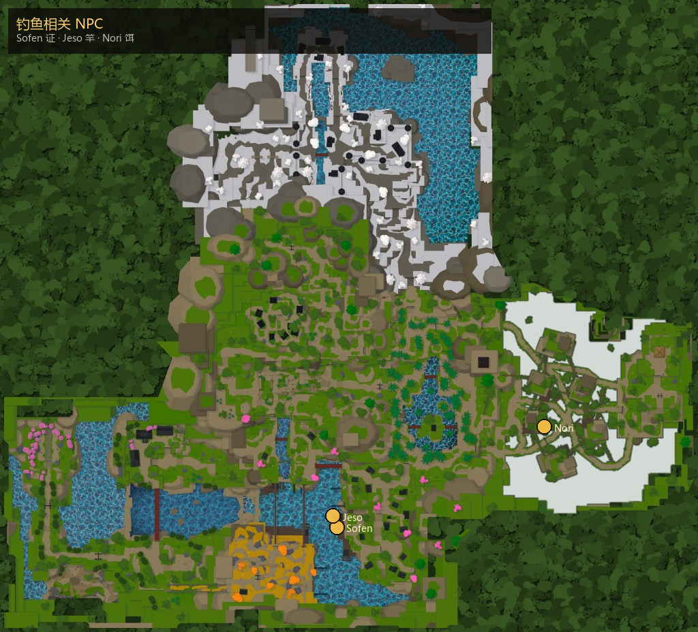
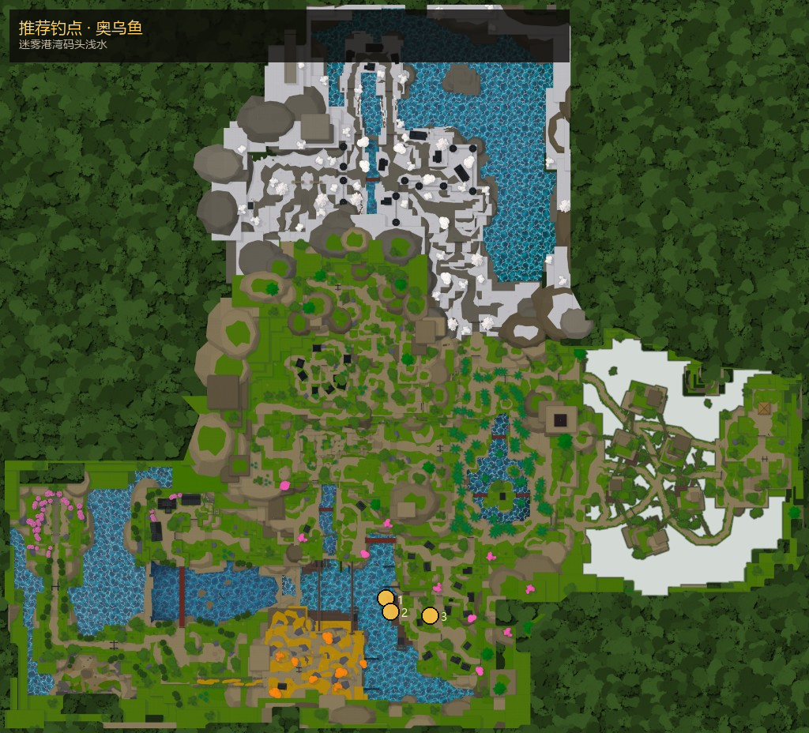

钓鱼
- 找码头 Dock Master Sofen（迷雾港湾），接证任务，付 5000 文。
- 拾取 许可证印章，交回 Sofen → 钓鱼许可证。
- 向 Fisherman Jeso 买竿；向 Baitmonger Nori（隐雾村）买高级饵。
- 装备竿（可选饵），对水面抛竿；按提示收线。
竿阶：基础竿捞小鱼 · 稀有竿 + 鱼头饵中层 · 传奇竿 + 金色触手深水传奇。

主页 / 钓鱼
竿阶：基础竿捞小鱼 · 稀有竿 + 鱼头饵中层 · 传奇竿 + 金色触手深水传奇。

| 竿 | 标价（文） | 稀有度 |
|---|---|---|
| 基础钓竿 | 3500 | 1 |
| 传奇钓竿 | — | 5 |
| 稀有钓竿 | 10000 | 3 |
每条鱼下方附推荐钓点图（码头 / 隐雾 / 冰纱交付带）。实机掉落表在服务端，点位为游玩向推荐。
| 鱼 | 档位 | 推荐水域 | |
|---|---|---|---|
| 奥乌鱼 | Common | 迷雾港湾码头浅水 | |
| 奥乌鲜鱼 | Common | 迷雾港湾日常水域 | |
| 海马 | Common | 港湾近岸 | |
| 珊瑚 | Common | 港湾礁石带 | |
| 小丑鱼 | Rare | 港湾 / 冰纱交付相关渔获 | |
| 斑马鱼 | Rare | 港湾中层 · 可交冰纱仓储 | |
| 金鱼 | Rare | 港湾；用于换更好竿 / 冰纱交付 | |
| 鱼头 | Bait | 饵 · Nori / 渔获拆分；钓点同港湾 | |
| 克拉苏隆 | Legendary | 深水 / 冰纱一带珍品 | |
| 甲壳兽 | Legendary | 深水传奇渔获 | |
| 金色触手 | Bait/Legendary | 深水饵；传奇竿才能稳住 | |
| 溺毙鱼饵 | Special | 特殊饵（高 BaitTier）；深水点 |
OuwFish · Common
Everyday Mistfall catch, plain enough for crates but welcome wherever supper has to stretch.
| 推荐水域 | 迷雾港湾码头浅水 |
|---|---|
| 推荐竿 | 基础钓竿 |
| 推荐饵 | 蠕虫 |

OuwFwesh · Common
Dockhands keep the old misspelling on the tag. The fish itself is clean, pale, and good for crates.
| 推荐水域 | 迷雾港湾日常水域 |
|---|---|
| 推荐竿 | 基础钓竿 |
| 推荐饵 | 蠕虫 |
Sea Horse · Common
Small curled catch from eelgrass beds, dried whole for market stalls and anglers' crates.
| 推荐水域 | 港湾近岸 |
|---|---|
| 推荐竿 | 基础钓竿 |
| 推荐饵 | 蠕虫 |
Coral · Common
Salt hardened coral snapped from harbor rock, traded by fish buyers and worked into sea scarred gear.
| 推荐水域 | 港湾礁石带 |
|---|---|
| 推荐竿 | 基础钓竿 |
| 推荐饵 | 蠕虫 |
Clown Fish · Rare
Brightly banded harbor catch, pretty enough for market talk and useful when pantries need more than small fry.
| 推荐水域 | 港湾 / 冰纱交付相关渔获 |
|---|---|
| 推荐竿 | 稀有钓竿 |
| 推荐饵 | 鱼头 |
Zebra Fish · Rare
Striped harbor fish with firm flesh, set aside for market crates and tailors who prize a clean stripe.
| 推荐水域 | 港湾中层 · 可交冰纱仓储 |
|---|---|
| 推荐竿 | 稀有钓竿 |
| 推荐饵 | 鱼头 |
Golden Fish · Rare
A fish bright as sun on water, used as payment for a finer rod, more valuable on the counter than in a supper crate.
| 推荐水域 | 港湾；用于换更好竿 / 冰纱交付 |
|---|---|
| 推荐竿 | 稀有钓竿 |
| 推荐饵 | 鱼头 |
Fish Head · Bait
Sour bait that draws better bites and is spent when the line resolves. Fit it to a rod that can hold brighter fish.
| 推荐水域 | 饵 · Nori / 渔获拆分；钓点同港湾 |
|---|---|
| 推荐竿 | 稀有钓竿 |
| 推荐饵 | — |
Krathulon · Legendary
Long bodied deep catch with a jaw like a dock cleat. Iceveil stores prize it because it keeps through cold travel.
| 推荐水域 | 深水 / 冰纱一带珍品 |
|---|---|
| 推荐竿 | 传奇钓竿 |
| 推荐饵 | 金色触手 |
Crustadon · Legendary
Heavy shelled deepwater brute. Old anglers keep it whole, remembering what dragged a man below.
| 推荐水域 | 深水传奇渔获 |
|---|---|
| 推荐竿 | 传奇钓竿 |
| 推荐饵 | 金色触手 |
Golden Tentacle · Bait/Legendary
Gleaming tentacle bait that draws the deepest bites. Each resolved bite spends bait from the stack.
| 推荐水域 | 深水饵；传奇竿才能稳住 |
|---|---|
| 推荐竿 | 传奇钓竿 |
| 推荐饵 | — |
Drowned Lure · Special
Knotted lure from Isao's lost line. It is not spent by the bite, and the river favors empty reels around it.
| 推荐水域 | 特殊饵（高 BaitTier）；深水点 |
|---|---|
| 推荐竿 | 传奇钓竿 |
| 推荐饵 | — |